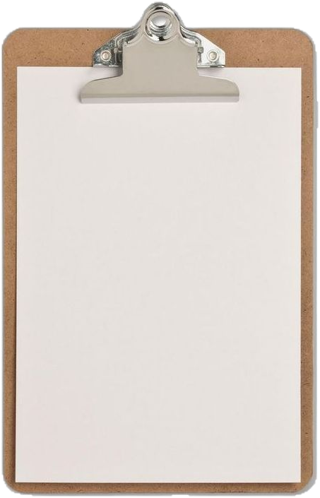

Lia Moraes // PsicólogaCRP 00/00000

[como]
funciona
a terapia comigo?
da primeira conversa
ao que acontece
entre as sessões.
Lia Moraes

Sem fórmula pronta.
No seu tempo.
arrasta pro lado →
Lia Moraes // PsicólogaCRP 00/00000
você não precisa esperar
desmoronar
pra ligar.
Terapia também é pra antes.
Pra quando algo começa a pesar e você ainda nem sabe dar nome.
Agende sua primeira conversa: link na bio.
@psi.liamoraespsicologia clínica
Lia Moraes // PsicólogaCRP 00/00000
Você não precisa chegar na primeira sessão
já sabendo
o que dizer.
Muita gente trava pensando por onde começar.
Não precisa de roteiro: a gente começa pelo que está aí, do jeito que estiver.
Organizar o resto é trabalho meu.
Quer saber se a terapia faz sentido pra você? Me chama pelo link da bio.
@psi.liamoraespsicologia clínica
Lia Moraes // PsicólogaCRP 00/00000
Desde cedo, a gente aprende a engolir o choro.
“Para de drama.”“Tem gente pior.”
“Isso passa.”“Seja forte.”“Não é nada.”
e depois chama isso de força.
Sentir não é fraqueza.
É informação sobre o que você precisa. Na terapia, a gente aprende a escutar isso.
@psi.liamoraespsicologia clínica